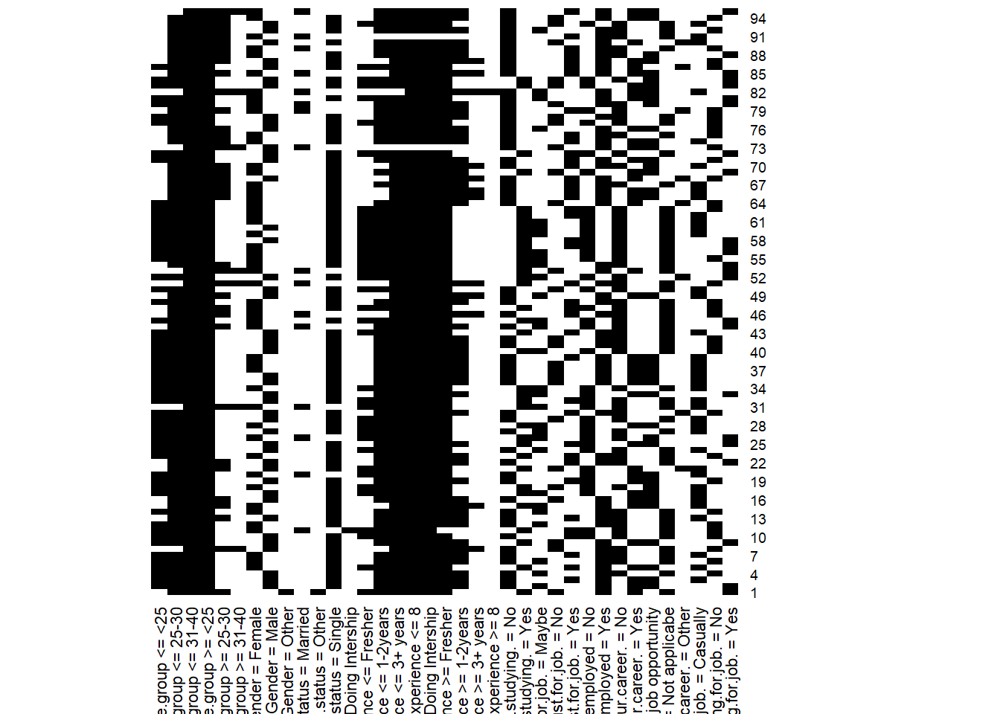

Chapter 4 Formal Concept Analysis
En este capítulo se tratará el tema de conceptos formales, aplicando la técnica de scaling a nuestro dataset.
En primer lugar creamos el contexto formal del dataset y aplicamos el escalado a cada columna, teniendo en cuenta las que son nominales y ordinales.
subFCA <- subset(dataset, select = c(2, 3, 5, 6, 8, 9, 11, 13, 14, 15))
fc <- FormalContext$new(subFCA)
fc$scale("Age.group", type = "interordinal", c("<25", "25-30", "31-40"))
fc$scale("Gender", type = "nominal") # 3
fc$scale("Marital.status", type = "nominal") # 3
fc$scale("Work.experience", type = "interordinal", c( "Doing Intership", "Fresher", "1-2years", "3+ years", "8")) # 5
fc$scale("Are.you.still.studying.", type = "nominal") # 2
fc$scale("Do.you.believe.degree.is.a.must.for.job.", type = "nominal") # 3
fc$scale("Currently.employed", type = "nominal") # 2
fc$scale("Did.you.switch.your.career.", type = "nominal") # 2
fc$scale("Reason.for.shift.in.career.", type = "nominal") # 3
fc$scale("Are.you.actively.applying.for.job.", type = "nominal") # 34.2 Mostrar los 5 primeros conceptos
head(fc$concepts, 5)## A set of 5 concepts:
## 1: ({1, 2, 3, 4, 5, 6, 7, 8, 9, 10, 11, 12, 13, 14, 15, 16, 17, 18, 19, 20, 21, 22, 23, 24, 25, 26, 27, 28, 29, 30, 31, 32, 33, 34, 35, 36, 37, 38, 39, 40, 41, 42, 43, 44, 45, 46, 47, 48, 49, 50, 51, 52, 53, 54, 55, 56, 57, 58, 59, 60, 61, 62, 63, 64, 65, 66, 67, 68, 69, 70, 71, 72, 73, 74, 75, 76, 77, 78, 79, 80, 81, 82}, {Age.group <= 31-40, Age.group >= <25})
## 2: ({4, 6, 8, 10, 11, 17, 21, 27, 35, 36, 40, 41, 42, 44, 48, 53, 54, 57, 60, 61, 63, 64, 65, 66, 73, 74, 76, 79, 81}, {Age.group <= 31-40, Age.group >= <25, Are.you.actively.applying.for.job. = No})
## 3: ({3, 5, 7, 12, 13, 14, 15, 16, 18, 19, 22, 25, 26, 28, 29, 31, 32, 33, 34, 37, 43, 51, 52, 55, 56, 59, 62, 69, 77, 78, 80}, {Age.group <= 31-40, Age.group >= <25, Are.you.actively.applying.for.job. = Casually})
## 4: ({1, 4, 6, 7, 8, 10, 11, 12, 20, 21, 22, 26, 28, 29, 31, 35, 36, 37, 38, 39, 40, 41, 42, 44, 46, 47, 48, 49, 50, 51, 52, 53, 56, 63, 65, 76, 78, 79, 80}, {Age.group <= 31-40, Age.group >= <25, Reason.for.shift.in.career. = Not applicabe})
## 5: ({2, 3, 5, 9, 13, 14, 15, 16, 17, 18, 23, 24, 25, 30, 32, 33, 34, 43, 55, 58, 59, 60, 61, 62, 64, 67, 68, 69, 70, 71, 72, 74, 75, 81, 82}, {Age.group <= 31-40, Age.group >= <25, Reason.for.shift.in.career. = Better job opportunity})4.4 Objetos
objetos <- fc$objectsprint(fc)## FormalContext with 95 objects and 37 attributes.
## Age.group <= <25 Age.group <= 25-30 Age.group <= 31-40 Age.group >= <25
## 1 X X X
## 2 X X X X
## 3 X X X X
## 4 X X X X
## 5 X X X X
## 6 X X X X
## 7 X X X X
## 8 X X
## 9 X X X X
## 10 X X X X
## Other attributes are: Age.group >= 25-30, Age.group >= 31-40, Gender = Female,
## Gender = Male, Gender = Other, Marital.status = Married, ...fc$plot()
A partir de los atributos podemos aplicar el cierre para encontrar consecuentes a distintas situaciones
La gente que cree que un grado universitario es necesario para un trabajo, es gente que mayoritariamente tiene experiencia en el trabajo en el rango entre 31 y 40 años.
S1 <- Set$new(attributes = atributos)
S1$assign("Do.you.believe.degree.is.a.must.for.job. = Yes" = 1)
fc$extent(S1) ## {3, 5, 7, 10, 11, 13, 19, 22, 23, 25, 30, 32, 39, 43, 46, 47, 48, 51, 57, 58,
## 62, 63, 65, 66, 67, 68, 70, 71, 72, 74, 75, 79, 85, 86, 87, 88, 89, 91, 95}fc$closure(S1)## {Age.group <= 31-40, Age.group >= <25, Do.you.believe.degree.is.a.must.for.job.
## = Yes}En este caso, la gente que busca trabajo de vez en cuando, está en el rango de edad de <25 o entre 31 y 40 años.
S2 <- Set$new(attributes = atributos)
S2$assign("Are.you.actively.applying.for.job. = Casually" = 1)
fc$extent(S2) ## {3, 5, 7, 13, 15, 16, 17, 18, 20, 21, 24, 27, 28, 29, 31, 32, 34, 35, 36, 37,
## 38, 39, 43, 49, 50, 59, 60, 61, 62, 65, 66, 67, 70, 74, 82, 90, 91, 93}fc$closure(S2)## {Age.group <= 31-40, Age.group >= <25, Are.you.actively.applying.for.job. =
## Casually}La gente que tiene como motivo para cambiar de profesion buscar una mejor oportunidad de trabajo y está casada, suele ser gente o en el rango de edad <25 o entre 31 y 40 años.
S3 <- Set$new(attributes = atributos)
S3$assign("Reason.for.shift.in.career. = Better job opportunity" = 1, "Marital.status = Married" = 1)
fc$extent(S3) ## {20, 26, 73, 80, 82, 85, 95}fc$closure(S3)## {Age.group <= 31-40, Age.group >= <25, Marital.status = Married,
## Reason.for.shift.in.career. = Better job opportunity}4.6 Aplicamos reglas de simplificación
fc$implications$apply_rules(rules = c("composition",
"generalization",
"simplification",
"rsimplification"),
parallelize = FALSE)## Processing batch## --> Composition: from 965 to 965.## --> Generalization: from 965 to 948.## --> Simplification: from 948 to 944.## --> Right Simplification: from 944 to 944.# Se ha reducido a 944 implicaciones
fc$implications$cardinality()## [1] 944Buscamos las reglas que en la parte izquierda tengan por ejemplo: “Work experience >= 8”
fc$implications$filter(rhs = "Work.experience >= 8")## Implication set with 18 implications.
## Rule 1: {Are.you.actively.applying.for.job. = Casually,
## Are.you.actively.applying.for.job. = No} -> {Gender = Male, Marital.status
## = Other, Work.experience <= Doing Intership, Work.experience >= 8,
## Do.you.believe.degree.is.a.must.for.job. = Yes, Reason.for.shift.in.career. =
## Other}
## Rule 2: {Reason.for.shift.in.career. = Better job opportunity,
## Reason.for.shift.in.career. = Not applicabe} -> {Gender = Male, Marital.status
## = Other, Work.experience <= Doing Intership, Work.experience >= 8,
## Do.you.believe.degree.is.a.must.for.job. = Yes}
## Rule 3: {Did.you.switch.your.career. = No, Did.you.switch.your.career.
## = Yes} -> {Marital.status = Other, Work.experience <= Doing Intership,
## Work.experience >= 8, Do.you.believe.degree.is.a.must.for.job. = Yes,
## Reason.for.shift.in.career. = Other}
## Rule 4: {Do.you.believe.degree.is.a.must.for.job. = No,
## Do.you.believe.degree.is.a.must.for.job. = Yes} -> {Marital.status
## = Other, Work.experience <= Doing Intership, Work.experience >= 8,
## Reason.for.shift.in.career. = Other}
## Rule 5: {Are.you.actively.applying.for.job. = No,
## Are.you.actively.applying.for.job. = Yes} -> {Marital.status = Other,
## Work.experience >= 8, Do.you.believe.degree.is.a.must.for.job. = Yes,
## Reason.for.shift.in.career. = Other}
## Rule 6: {Are.you.actively.applying.for.job. = Casually,
## Are.you.actively.applying.for.job. = Yes} -> {Marital.status = Other,
## Work.experience >= 8, Do.you.believe.degree.is.a.must.for.job. = Yes,
## Reason.for.shift.in.career. = Other}
## Rule 7: {Do.you.believe.degree.is.a.must.for.job. = Maybe,
## Do.you.believe.degree.is.a.must.for.job. = Yes} -> {Marital.status = Other,
## Work.experience >= 8, Reason.for.shift.in.career. = Other}
## Rule 8: {Do.you.believe.degree.is.a.must.for.job. = Maybe,
## Do.you.believe.degree.is.a.must.for.job. = No} -> {Marital.status = Other,
## Work.experience >= 8, Reason.for.shift.in.career. = Other}
## Rule 9: {Are.you.still.studying. = No, Are.you.still.studying.
## = Yes} -> {Marital.status = Other, Work.experience >= 8,
## Do.you.believe.degree.is.a.must.for.job. = Yes, Reason.for.shift.in.career. =
## Other}
## Rule 10: {Currently.employed = No, Currently.employed = Yes} -> {Marital.status
## = Other, Work.experience >= 8, Do.you.believe.degree.is.a.must.for.job. = Yes,
## Reason.for.shift.in.career. = Other}
## Rule 11: {Gender = Female, Are.you.still.studying. =
## No, Do.you.believe.degree.is.a.must.for.job. = Maybe,
## Are.you.actively.applying.for.job. = Casually} -> {Work.experience >= 8}
## Rule 12: {Marital.status = Married, Do.you.believe.degree.is.a.must.for.job. =
## Maybe, Currently.employed = Yes} -> {Work.experience >= 8}
## Rule 13: {Gender = Female, Gender = Male} -> {Marital.status =
## Other, Work.experience <= Doing Intership, Work.experience >= 8,
## Do.you.believe.degree.is.a.must.for.job. = Yes, Reason.for.shift.in.career. =
## Other}
## Rule 14: {Age.group >= 31-40, Work.experience >= 3+ years,
## Reason.for.shift.in.career. = Better job opportunity} -> {Work.experience >=
## 8}
## Rule 15: {Reason.for.shift.in.career. = Not applicabe,
## Reason.for.shift.in.career. = Other} -> {Marital.status = Other,
## Work.experience >= 8, Do.you.believe.degree.is.a.must.for.job. = Yes}
## Rule 16: {Reason.for.shift.in.career. = Better job opportunity,
## Reason.for.shift.in.career. = Other} -> {Marital.status = Other,
## Work.experience >= 8, Do.you.believe.degree.is.a.must.for.job. = Yes}
## Rule 17: {Age.group <= 25-30, Age.group >= 31-40} -> {Marital.status
## = Other, Work.experience <= Doing Intership, Work.experience >= 8,
## Do.you.believe.degree.is.a.must.for.job. = Yes, Reason.for.shift.in.career. =
## Other}
## Rule 18: {Age.group <= <25, Age.group >= 25-30} -> {Marital.status = Other,
## Work.experience >= 8, Do.you.believe.degree.is.a.must.for.job. = Yes,
## Reason.for.shift.in.career. = Other}sizes <- fc$implications$size()
colMeans(sizes)## LHS RHS
## 3.407839 1.222458